{kind=link}
{kind=link}
{kind=link}
{kind=link}
{kind=link}
{kind=link}
{kind=link}
{kind=link}
{kind=link}


Paint Chipping with Salt Crystals
And Other Advanced Weathering Techniques
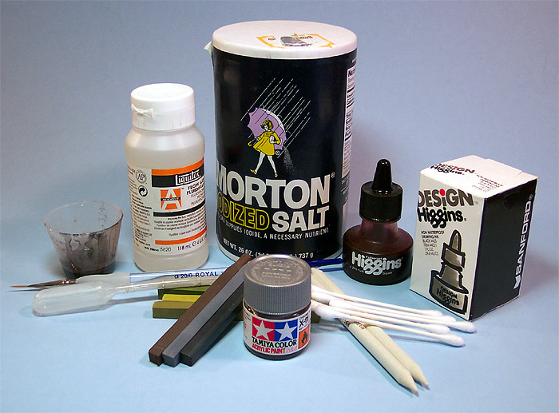
Images, text and model Copyright � 2004 by Matt Swan
Not too long ago I came across an article in Fine Scale Modeler by Mike Chorney focused on creating paint chip patterns using salt crystals. I don�t recall much about the article but I think they were working on Japanese aircraft and maybe some armor. The basic idea sounded pretty neat though and as I have never been satisfied with paint chipping created with a silver paint pen and barely satisfied with short bristle brushwork to create chips, I thought I would give it a try. In this feature I will take you through all the steps I followed to create this effect and will elaborate on how to wash raised panel lines with an ink based sludge wash as well.
The first thing that must be accomplished is the basic construction and surface preparation of your model. For this exercise I will be working with the ESCI 1/48 B-26B Marauder. A key point through all of this is to have patience, paint must be allowed to cure fully between steps and anywhere that we use water must have time to evaporate. If you rush things your end result will most likely be unsatisfactory.
One last thing I would like to mention before we get started, most of the small images you will find in this feature link to larger images so if you want a closer look at any of these steps just click on the small image.
Salt Chipping
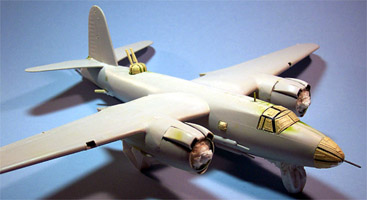
1. I have finished all my seams using the Fencing Technique. Where I had obliterated raised panel lines with sanding I have simply scored the area with my razor knife. This has created a recessed line for a short distance with a slight raised edge, once everything is complete it will be nearly indistinguishable from the other raised lines. Any clear parts need to be masked to protect them from paint. I generally use thin strips of masking tape or Black Magic masks but whatever works for you is fine. For this model I am using a combination of masking tape strips and Bare Metal Foil to mask the clear areas and have rolled masking tape into small tubes to protect most of the gun barrels. The model is wiped down with a Micro Sheen cloth and hit with some compressed air before heading to the paint room.
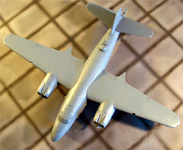
2. The model has been completely painted with a gray primer. For this I am using Model Master Gray Primer cut about 30% with lacquer thinner. This needs a day to fully cure but it will bite into the plastic quite well and give us a solid base to work off of. It also will let us see where any problems may exist in the seam repairs or various other part joinings. Sometimes casting defects that have escaped notice before will show up at this point. Regardless, now is the time to fix these problems. Any repairs that have been done need to be reprimed so that we have a uniform color on the model. Another benefit of priming is that we will need less final paint to achieve good color density.
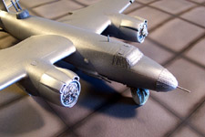
3. Now that the final surface touch-ups have been done and the primer has cured for a day we need to give some thought
to how our final paint chipping will look. Areas that will show the most amount of wear would be any leading edge surface that would bear the brunt of the air stream or any flak particles impacting the plane as well as areas that the ground crew would be working on or around like walk ways and around fueling ports. After looking over our model and identifying these areas we need to paint them an appropriate metallic color. For this aircraft I am using Tamiya acrylic silver but you could use steel or aluminum just as easily. I�ve coated the wing leading edge, cowling leading edges and nose area as well as the leading edges of the tail surfaces. While acrylic paints dry �to the touch� fairly quickly we do want it to �cure� overnight before we start applying the salt crystals. This waiting for cure time is why I usually have three or four projects on the worktable at any one time.
4. Now we can start to apply some salt crystals to the leading edges and some panel lines. I�m using basic tables salt here � nothing weird or unusual. Starting with a �0� sable hair brush and a cup of tap water I wet the brush and dab lightly onto the leading edge (see picture #1) leaving behind a very small droplet of water (see picture #2). I�m only working about a three or four inch area because I don�t want the water to evaporate before I can get the salt into it. Now I take a pinch of salt and sprinkle it over the wetted area and crystals attach themselves to the surface. If some stray crystals end up in other areas I use a wide stiff brush to clean them off (see picture #3).
I also work down the leading edge panel lines and around the engine cowlings. Across the nose I want a little more severe chipping pattern so after sprinkling the salt onto the water droplets there I use the damp brush to move the crystals around and connect the smaller patches creating larger patterns. After each section has had salt applied I will hold the model at an angle and gently tap the wing or fuselage to shake off excess salt, yes, my desk is now very salty.
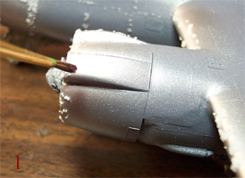 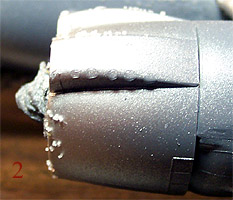 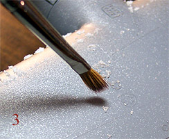
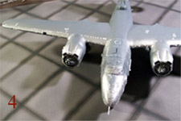
5. We must give the model another period of time for the water to evaporate. Once this has happened the salt crystals have a fairly strong bond to the surface � they will not blow off during airbrushing. Now is a good time to look closely at our salt pattern and maybe knock off some crystals if it looks too heavy. If it looks fine we can proceed to paint. Click on picture #4 for a look at the Marauder just before she heads to the paint room.
The paint scheme I have selected for this model will be Olive Drab over Neutral Gray. I shall begin with the gray and shoot the lower sections first then I will mask for the upper section.
Once the lower color has had an opportunity to dry I start to lay masking tape for the color demarcation. As the tape approaches a salted area I remove just enough salt with the tip of a toothpick to allow the tape to clear.
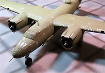
6. After all the final colors have been painted and have had a day to dry the masking tape and the salt crystals can be removed. I am using a round toothpick and dragging it across the salt. The crystals pop right off. This does make a bit of a mess so have your modeling area prepared to facilitate cleanup. Some crystals are in hard to reach areas but the point of the toothpick is perfect to reach into these crevasses and clear them. Click on the picture to the right for a larger image and you can see most of the paint chipping appears nice and natural however some does not quite do it for me, especially where I had followed the panel lines on the wing leading edge so I will tone that down a little with some thinned Olive Drab on a fine bristled brush and paint over about a third of those chip marks. Next time I will be a little more random in those areas with the salt crystals.
From here the model will get a coat of Future Floor Polish, have decals applied, receive another coat of Future to seal the decals then will be ready to begin the panel line wash process.
Washing Raised Panel Lines and Fading Panels
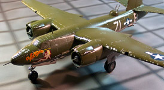
Everything I talk about in relation to this kit can be applied to any older Revell or Monogram kit or for that matter, any kit that utilizes raised panel lines. A conventional sludge wash based around acrylic paste gives you plenty of time to work the surface and is easily removed. This does not work so well with raised panel lines so we will add to our sludge wash some Higgins water soluble ink, which will make it slightly more aggressive. This means we must work with smaller sections and not get distracted in the middle of the process so let the cat/dog out now.
Just like the previous process, proper surface preparation is key, all painting must be done and cured. I prefer to have all decals in place and sealed with Future but any clear coat would be acceptable. You can click on the image to the right to view a larger picture of the prepared model. The clear coat must have at least a day of cure time before the wash process begins. Have your basic materials on hand such as a 20/0 spotting brush, a mixing cup for the wash, a cup of clean water, a good quality paper towel and some Q-Tips or other high-grade cotton swabs.
1. First we must prepare the wash. Usually I just throw this together but for the sake of instruction, we will be a little more precise this time. First a dab of Grumbacher Black acrylic paste about one inch in length goes into the mixing cup followed by eight mililiters of tap water. To this we add eight drops of Higgins Brown ink, two drops of Liquitex Flow Aid and two drops of liquid dish washing detergent. Mix well. You need to make sure that dab of paste gets mixed in well or your wash will be too red. You can substitute alternative colors of paste or ink to achieve different colors of washes, these are simply the colors I prefer.
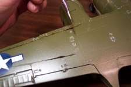
2. I wet the brush and begin to trace the raised lines, I do not want so much liquid on the brush as to create puddles but enough to draw a bead down the panel line. On the recessed control surface lines I leave a heavier amount of wash. I started with the left wing but that was simply an arbitrary starting point. I work over about two-thirds of the wing then stop to allow the liquid to dry. While this is drying (about five minutes) I prepare the paper towel. Using about a four-inch square section of towel I fold it into a pad about � inch by 2 inches. One end is dampened just slightly and I use that to gently wipe the panel lines from front to back. In some areas the wash will come off easily but in others it requires a more vigorous scrubbing action. It is best to start gently until you have found those tough spots. I also use a damp cotton swab to work some of the lines. Each model is different and you need to get the feel for how each one will behave with the wash.
As you work over the panel lines you may think that all the wash has been removed but look carefully under a light, this stuff fades out at this point but will become much more prominent once the final dull coat is applied. Also pay attention to service and access ports, leave a good sized drop of wash to dry on these areas then dampen your fingertip, place onto the dried spot and wipe quickly in the direction of airflow or gravity to create stains.
Other than the composition of the sludge wash and the resulting requirement to work in smaller sections this process is virtually identical to that described in The Basics of Weathering.
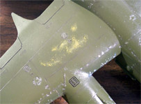
3. All of the panel lines have been washed and wiped now. Access ports have adequate stains and some fuel and oil stains have been applied to the engine nacelles but I am not done yet. I really want this bird to be weathered and worn so I will continue with some chalk fading of selected panels.
For this process I am using a light green Prism pastel chalk. I selected a shade that is slightly lighter than the base color of the aircraft. At art supply stores you can find sticks of this chalk in just about any color you could hope for or even grind several colors and mix your own shades. I use a razor knife to shave some from the stick into a soda pop bottle top. Next I use a #2 soft brush to collect some chalk dust and brush it onto the selected wing or fuselage panel. Once a good amount of chalk dust is on the panel I use a cotton swab, a smudge stick and even my fingertip to work it in leaving a slightly darker area around the perimeter of the panel. I am not doing this to every panel on the aircraft but am trying to create a random pattern of wear. Excess chalk dust is gently blown off the model once the panel shading has reached your satisfaction.
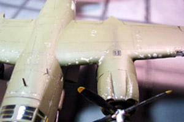
4. Now I am ready for some exhaust staining and just a little bit of gun blast staining. I will lay down a base stain using Tamiya X-19 smoke in my airbrush set at a low psi (8). Forethought is important here, look at the exhaust ports and try to visualize how the slipstream would draw the exhaust across the airframe. Look at gun positions and consider if the aircraft skin forward of the gun is actually close enough to pick up stains or would they all be behind the gun muzzle. Once you have decided where to place the stains shoot several very light coats of X-19 onto these areas keeping the airbrush angled to the rear of the craft.
This is only a base color so it does not need to be very dark, just a hint of color is all that is needed. Once it has had an hour or so to dry return to the chalks and grind some black and/or gray chalk. Apply this with the same brush and swab techniques used for the panel fading keeping that slip steam in mind all the while. For more on this refer to �The Basics of Weathering� where it is described in more detail.
5. To wrap everything up I have applied a good coat of Polly Scale clear flat acrylic to the entire model. This coating has been thinned about 20% with Windex and shot at about 18psi from a range of about 6 to 7 inches. After this has dried the remaining masks are removed and the propellers are attached.
Unfortunately the chalk on the panels faded quite a bit under the clear flat and you cannot really see the effect in the pictures.
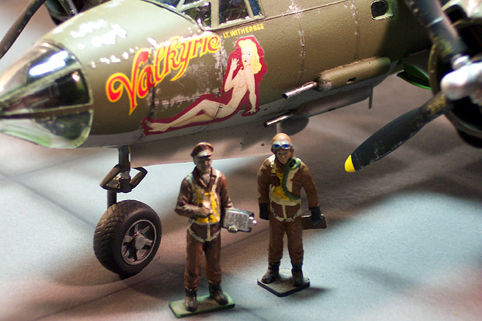